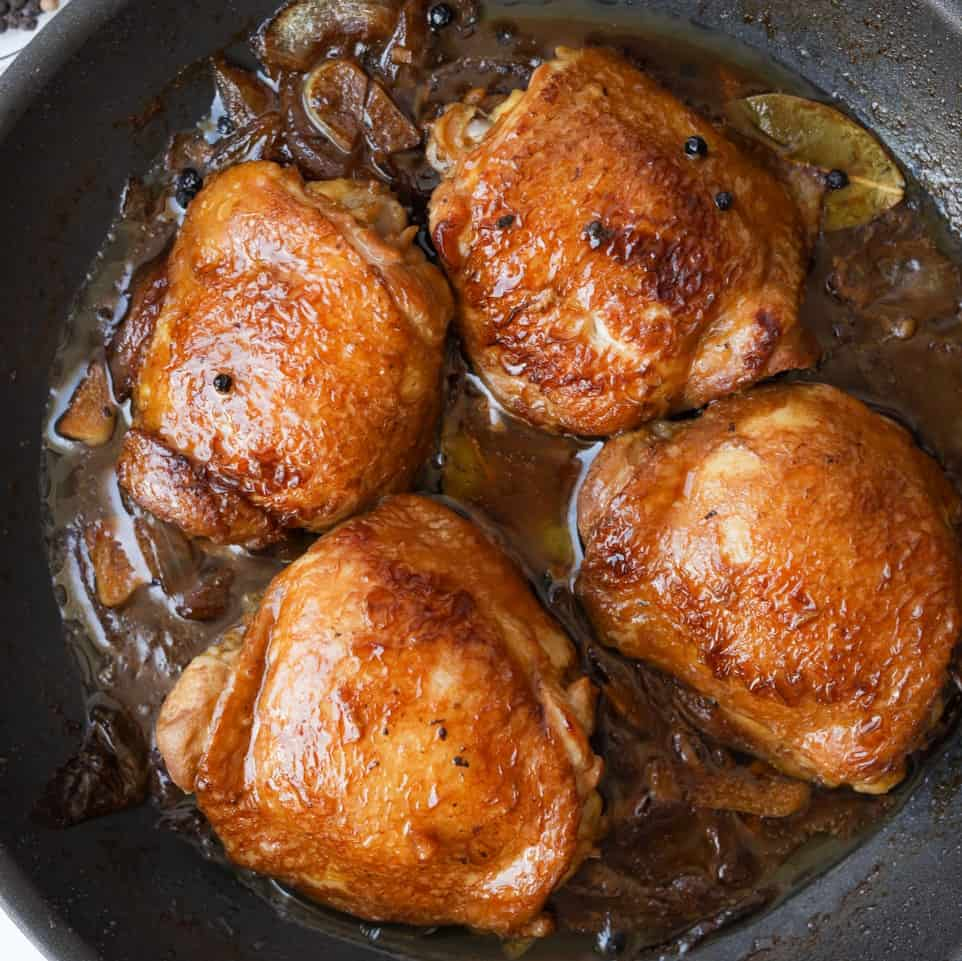

Adobo

Description
Delicious chicken adobo with tender, juicy chicken cooked in a rich and flavorful vinegar pepper sauce that's simple to make and great with rice.
Ingredients
- 2 tbsp canola oil
- 6 cloves garlic, crushed
- 1 pc onion, sliced
- 1 kilogram chicken cut ups
- 2 tbsp vinegar
- ¼ cup soy sauce
- 1 cup water
- 2 pcs bay leaves
- 1 tsp whole black peppercorns, slightly crushed
- 2 pc Knorr chicken cubes
- 1 tsp brown sugar packed
- Optional: 1 cup kale or spinach
Steps
-
Heat oil in pan and sauté garlic and onions.
Then add chicken to the pan and sear on all sides, until you have a little browning in the chicken skin.
-
Pour in vinegar, soy sauce and water. Add bay leaves, pepper and Knorr Chicken Cubes.
Bring to a boil over high heat then reduce heat to simmer, but do not cover the pan.
Continue to simmer for 10 mins.
-
Remove chicken pieces from sauce and fry in another pan until nicely browned.
-
Put back fried chicken pieces into sauce.
Add sugar and let simmer again for another 10 minutes or until sauce has thickened.
Serve warm.